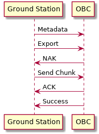

File Transfer Protocol¶
The file transfer protocol is implemented by both the file transfer service and clients interacting with the service. This protocol uses a content-addressable methodology similar to Git for storing and chunking files. This document covers the content-addressable storage, all messages used in the protocol, and includes diagrams of common use cases.
Content-Addressable Storage¶
The file protocol uses a content-addressable system to store file data.
All files are broken up into chunks prior to sending. This chunking
is initiated either by an export or import message. A local
storage folder is created by the file transfer service and client
for storing the content-addressable information.
Inside of this directory, each file has its own folder.
The folder name is a 16-bit BLAKE2 hash of the file’s
contents.
This folder is created as part of the import/export process.
Inside of each file’s folder there is a meta file and numbered chunk files.
Each meta file contains metadata describing the file
(currently only the number of chunks).
Each chunk file is named with its chunk number.
Each chunk file contains the raw contents of that chunk.
Here is an example content-addressable storage structure containing an eleven chunk file:
storage/
└── 852f1630f4ed2c0bc934d71ada618974/ <- BLAKE2 hash of file
├── 0 <- Each of these are file chunks
├── 1
├── 2
├── 3
├── 4
├── 5
├── 6
├── 7
├── 8
├── 9
├── 10
└── meta <- Contains `{ "num_chunks" : 11 }` in CBOR
Messages¶
All messages in the file protocol are encoded as CBOR arrays and are sent in UDP packets.
The first value in the encoded list is the channel_id for all messages
and it is followed by the hash for content-addressable messages.
- The
channel_idparameter is used to indicate a group of messages associated with a particular file protocol transaction.- The
hashparameter is the BLAKE2 hash for the corresponding file which is being transferred.
| Name | Syntax |
|---|---|
| Metadata | { channel_id, hash, num_chunks } |
| Export Request | { channel_id, export, hash, path, mode } |
| Import Request | { channel_id, import, path } |
| Cleanup Request | { channel_id, cleanup, hash } |
| File Chunk | { channel_id, hash, chunk_index, data } |
| Acknowledge (ACK) | { channel_id, hash, true, num_chunks } |
| Negative Acknowledge (NAK) | { channel_id, hash, false, x_start, x_end, y_start, y_end, … } |
| Request Success | { channel_id, true, ..`values` } |
| Request Failure | { channel_id, false, error_message } |
Metadata¶
This message is sent to inform the message receiver of the metadata of a
particular file.
If the hash directory for that file already exists in the receiver’s
temporary storage, then the metadata file will be updated with the new information.
If the hash directory does not exist, then it will be created, along with
the accompanying meta file.
This message should be sent prior to an export request
to ensure the expected number of chunks is known.
{ channel_id, hash, num_chunks }
Export Request¶
This message is sent to initiate the process of transferring a file from the message sender to the message receiver. It contains the channel id, the string “export”, the file’s hash, the target path for the file and file’s permissions mode.
The message receiver will begin waiting for file chunks after
receiving this message. Once the timeout triggers it will
attempt to export the file locally. If the file is incomplete then
the receiver will request any missing chunks. Upon receiving
all chunks it will attempt to verify and export the file to
the local filesystem. This message is sent after the
sync command as part of the export process.
{ channel_id, "export", hash, path, mode }
Import Request¶
This message is sent to initiate the process of transferring a file to the message sender from the message receiver. It contains the channel ID, the string “import”, and the requested file’s path.
Upon receiving, the message receiver will import the requested
file into the managed content-addressable storage and send a
success message to the sender. This success message
will contain the file`s hash and allow the original message
sender to determine which file chunks are required.
{ channel_id, "import", path }
File Chunk¶
This message is sent as part of the file import or export process.
It contains the file hash, chunk index, and raw chunk data.
By default, each raw chunk is 4KB in size. Individual chunk messages will not get
an immediate reply. However, if no chunks are received within the
timeout window then an ACK or NAK will be sent depending
on whether all the chunks have been received or not.
{ channel_id, hash, chunk_index, data }
Note
Chunk size configuration is not currently available, but will be added in a future release.
Acknowledge (ACK)¶
This message is sent to inform the message receiver that the message sender has all chunks for a given file. It contains the file’s hash, the boolean value true, and the number of chunks in the file.
{ channel_id, hash, true, num_chunks }
Negative Acknowledge (NAK)¶
This message is sent to inform the message receiver that the
message sender does not have all chunks for a given file. It
contains the file’s hash, the boolean value false, and a list
of missing chunk ranges. The ranges are pairs of numbers where
the first number is inclusive and the second is exclusive.
For example 0, 2 means the first two chunks, 0 and 1, are missing.
A NAK may be sent after receiving an export request message,
after receiving a succes message in reply to an import request message,
or after a timeout during a file import or export operation.
The message sender should expect the message receiver to send
the missing file chunks upon receipt of a NAK.
{ channel_id, hash, false, 1, 4, 6, 7 }
The above example NAK indicates that chunks 1-3 and 6
are missing.
Request Success¶
This message is sent as part of the import or export process.
It contains the channel ID and the boolean value true.
When this message is sent as part of the export process,
it will be sent at the very end, indicating that all file chunks were
successfully transmitted to the requester.
{ channel_id, true }
When this message is sent as part of the import process,
it will be sent after receiving the initial import request,
once the receiver has successfully prepared the file for transfer.
The requester will then need to send a NAK to begin the transfer process.
In this case, the message will also contain file’s hash, number of chunks, and mode.
{ channel_id, true, hash, num_chunks, mode }
Request Failure¶
This message is sent if there as an error in the import or
export process. It contains the channel ID, the boolean false
and the error message.
{ channel_id, false, error_message }
Cleanup Request¶
This message is sent to request that some portion of the temporary storage directory be deleted.
If the hash parameter is specified, then the storage sub-directory associated with that ID will
be deleted.
If the hash parameter is omitted, then the entire temporary storage directory will be deleted.
By default, the temporary directory associated with a particular file will be automatically deleted upon the successful completion of its transfer. The cleanup request is useful when a file transfer fails for some reason and the user wishes to start the transfer over from scratch.
{ `channel_id`, cleanup, `hash` }
Common Protocol Usages¶
Uploading a single chunk file from a ground station to an OBC:

Downloading a single chunk file from an OBC to a ground station:
Uploading a three chunk file from ground station with a chunk re-request: